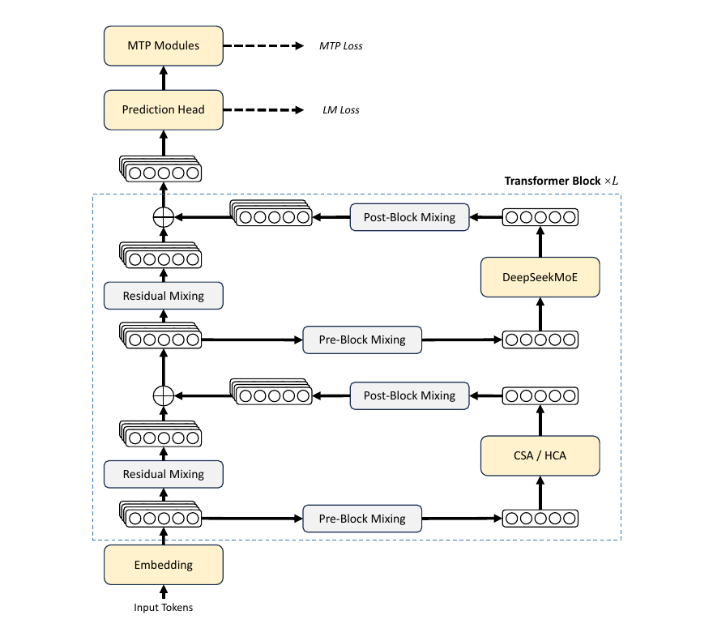

整体架构：DeepSeek-V3 路线的长上下文版本
V4 不是从零换架构。它保留 DeepSeekMoE 和 MTP，把 attention、residual、optimizer 和系统实现同时升级。这样做的好处是主能力栈延续，风险集中在长上下文瓶颈和训练稳定性上。

| 组件 | V4 做法 | 解决的问题 |
|---|---|---|
| MoE: Mixture-of-Experts每个 token 只激活部分专家，因此 total parameters 很大，但 activated parameters 可控。V4-Pro 是 1.6T total、49B activated；V4-Flash 是 284B total、13B activated。 | 沿用 DeepSeekMoE，所有 Transformer block 使用 MoE；前 3 个 MoE 层用 Hash routing: static token-id to expert-id routing浅层 MoE 的专家集合不完全靠 learned router 临时选择，而是用 checkpoint 中固定的 token-id -> expert-id 查表来决定候选专家；learned gate 仍会给这些专家打分加权。V4 只在前 3 个 bootstrap MoE 层使用。。 | MoE 解决“模型容量 vs 每 token 计算量”的矛盾：总参数可变大，但单个 token 只激活少量专家。Hash routing 给浅层一个稳定的 routing bootstrap，降低早期表征还弱时的路由抖动。 |
| MTP: Multi-Token Prediction训练时不只预测下一个 token，也预测未来 token。V4 沿用 V3 配置，MTP depth=1，训练中大部分阶段 loss weight=0.3，学习率衰减阶段降为 0.1。 | 沿用 DeepSeek-V3 的 MTP modules 和 objective。 | 提升 token-level 表征和推理吞吐相关能力。 |
| Attention | Hybrid CSA/HCA，前两层 Flash 用 pure SWA；Pro 前两层用 HCA；后续 CSA/HCA 交错。 | 让 1M context 不被 attention FLOPs 和 KV cache 拖死。 |
| Residual | 加入 mHC，把 residual stream 扩成多个 channel，并约束 residual mixing。 | 提高深层信号传播能力，同时控制数值不炸。 |
| Optimizer | 大部分模块用 Muon；embedding、prediction head、RMSNorm、mHC 静态 bias/gate 仍用 AdamW。 | 更快收敛和更稳定的大规模训练。 |